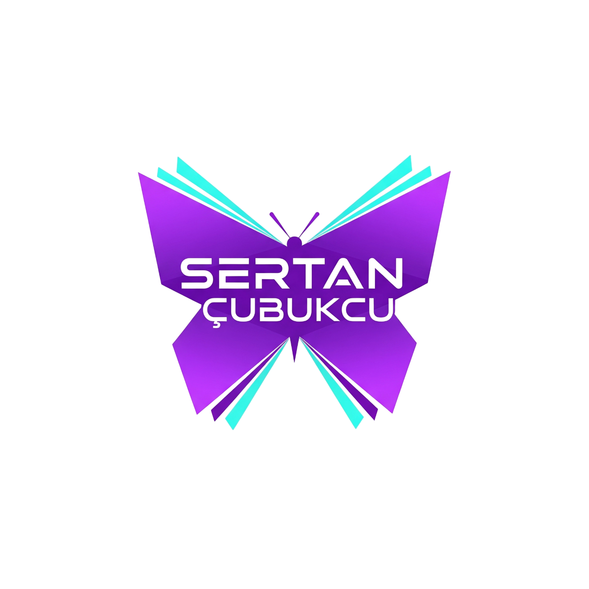

NEBÂTAT 🌿
Botanik Atlası & Toksisite Rehberi
🍃 Doğanın Şifası, Zehri ve Gizemi
Yaprakların Dilini ve
Toprağın Gizli Şifasını Keşfet
Evindeki salon çiçeği kedin için güvenli mi? Ormanda karşılaştığın mantar lezzetli bir Kanlıca mı, yoksa ölümcül bir Köygöçüren mi? Türkiye'nin endemik hazinelerinden şifalı dağ otlarına kadar doğanın tüm sırları Nebâtat'ta.
🌿 48+ Zengin Botanik Tür
🍄 10+ Yabani Mantar Türü
🐱 %100 Evcil Hayvan Analizi
🇹🇷 7 Coğrafi Flora Bölgesi
Toksisite & Zehirlenme Güvenlik Radarı 7/24 ACİL
Şüpheli bitki veya mantar tüketiminde zamanla yarışılır. Kusturmaya çalışmayın, derhal UZEM'e danışın.
COĞRAFİ ÇEŞİTLİLİK
İnteraktif Türkiye Flora & Mantar Bölgeleri
Anadolu’nun mikroklimalarında yetişen benzersiz bitki örtüsü ve orman mantarlarını bölge bölge inceleyin.
BOTANİK BİLGİ YARIŞMASI
Zehirli mi, Şifalı mı? Mantarı Tanı!
Doğadaki bitkileri ve mantarları ne kadar iyi tanıyorsun? Bilgini sına, hayat kurtaran detayları öğren.
Soru: 1 / 6
Toplam Puan: 0
Bitki / Mantar Adı
Latin Name
İpucu metni buraya gelir...
Merhaba! Ben Pıtrak 🌿 Bitki ve mantar danışmanınım. Bana sorabilirsin!
Sevimli Rehber Pıtrak
● Çevrimiçi Botanik Danışmanı